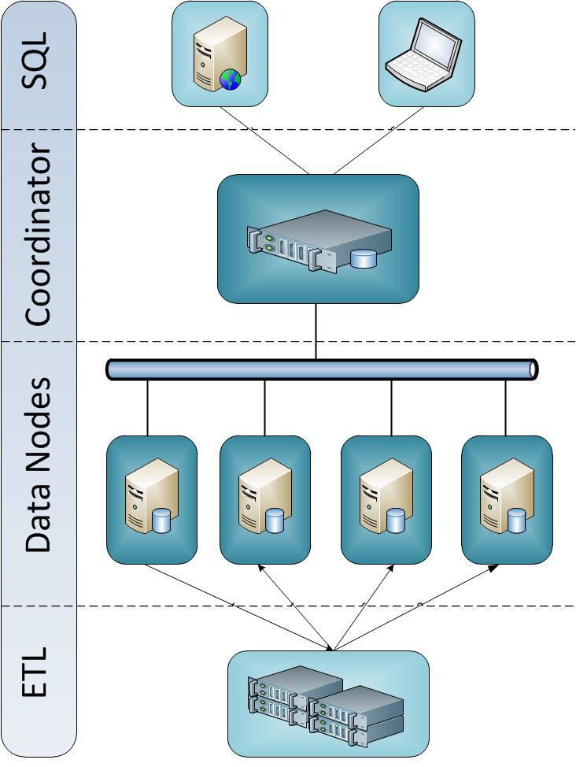

Table of Contents
The purpose of this document is to provide information to users of Stado to allow them to properly plan for its installation and configuration. To help achieve this, hardware purchasing considerations and database schema are discussed.
Stado is a parallel, clustered database system designed for data warehousing solutions. Its objective is to allow queries involving large volumes of data to execute in parallel across multiple servers in order to return results back more quickly.
The software utilizes other systems, called nodes, each of which houses its own independent database. Each underlying database is PostgreSQL 9.0 or later running in a shared-nothing architecture, typically using commodity PC-based hardware.
To allow for quick response times, the database administrator (DBA) employs strategies to partition each table in the database, typically based on a computed hash of a column. The optimizer intelligently recognizes when to join tables locally or when it needs to send data to other nodes. Various other techniques are used to achieve linear or near-linear scalability.
Table of Contents
We recommend using Linux as the operating system that the nodes will run on, although we do not recommend any particular distribution.
Stado is written in Java and communicates with the underlying databases via JDBC. Java Runtime Environment 6.0 or later is required. At the same time, user applications can connect to Stado with PostgreSQL client drivers for JDBC or ODBC, or with any PostgreSQL compatible driver.
Although Stado runs in a Java Virtual Machine, it should be pointed out that most of the resource intensive work is done within the native underlying databases, with Stado coordinating the work.
Stado has a single process that executes on the coordinator node. In a simple configuration, the other nodes merely have the underlying database utilized. For greater scalability, a Stado Agent process may execute on each node.
Table of Contents
A discussion of what to consider when purchasing hardware appears below, along with some recommendations.
Within a node there are various components that influence the total performance of the system, in particular, the CPU, memory, the bus speed, networking components, and storage.
Note the order of the list just stated is in approximate order of the fastest to slowest components. Hard disks are electro-mechanical devices with moving parts and are much slower than CPUs of course.
We also want to avoid making any single component a bottleneck and achieve some balance on each system, but while doing so at a reasonable cost.
The nodes in the Stado cluster will need to read from disk often. To achieve good performance, you should consider using RAID, such as RAID 10 (striping and mirroring) or RAID-5 (striping with parity), with a good disk controller. This allows you to get multiple drives working at the same time. If the SCSI interface is used, you may want to get a controller card with multiple channels to achieve greater data transfer rates from the drives. SATA drives also offer a very good value.
We are mainly concerned with read performance. In addition to read performance gains through striping, the other advantage of using RAID is redundancy. In a RAID-5 or RAID 10 (1+0) configuration, you can achieve both greater throughput through multiple drives, while allowing the node to be able to continue working if there is a drive failure. With many nodes and drives in your cluster, you will likely have a drive failure at some point, so using RAID should be considered a necessity.
We recommend RAID 10 for redundancy and performance.
Another option is to use software RAID, which appears to be gaining more proponents recently, given the ever-faster processors available.
The drives themselves should have a reasonably fast seek time. You may consider purchasing drives with a high RPM rate.
You can either have direct attached storage, or make use of a SAN. Using a SAN also has the benefit of potentially preparing stand-by nodes for better availability.
You should consider having separate devices for temp space, apart
from where table data is stored. Stado allows you to define
tablespaces, where a logical tablespace group maps to tablespaces
on each of the nodes. You can also use this in determining placement
of your tables as well. This same device can be used when
configuring the PostgreSQL parameter
temp_tablespaces.
If indexes are used, you may also want to consider putting indexes on a separate device.
When deciding on how many individual nodes you want with how many hard disks for each, you should have a good idea of the size of your database. Take into account any indexes that you may create. If you replicate tables or denormalize data, you will need more space (more information on denormalization appears in the Database Schema section). Finally, you should have a lot of extra space for temp tables. Stado uses temp tables to store intermediate results as queries are processed. It is recommended to not use more than 60% of the available database storage on a node, but this will vary depending on your schema and queries.
A lot of data will be moving around amongst the nodes, so high-speed connectivity is required between them. Gigabit Ethernet offers the best value in accomplishing this. There are other alternatives such as Infiniband, but it is more expensive.
One of the most important ways to get more performance out of a system is to have ample memory. More memory allows the database to use more cache. More cache means more of the database can be stored in memory, reducing disk accesses. A caveat here is that for large volumes of data and data warehousing queries that need to scan entire tables, cache rates may be low. Nonetheless, ample memory is a necessity, and helps out tremendously with internal processing such as sorting and intermediate results.
When purchasing your systems, get as much memory as you can within your budget. Keep in mind that it is not just the underlying tables in the database that will use it. Temporary tables will be created and more memory will be available for them as well means less swapping to disk.
When deciding on a CPU, it is usually best to look for the best performing one at the most reasonable cost. Very often the very fastest available will only offer minor improvements in speed while costing significantly more than a processor slightly slower. You may be better off spending your hardware budget elsewhere.
The coordinator should be a multi-core or multi-processor system.
You will designate one of the nodes as the coordinator. This is also typically where metadata information is stored. The load will be a little heavier on the coordinator, so it is a good idea to consider getting extra memory and perhaps a multi-core or multi-processor system for the coordinator.
As mentioned above for the nodes, Gigabit Ethernet over copper offers the best value. If you choose that, accordingly, you will want to purchase Gigabit Ethernet switches.
You may want to consider configuring the nodes in the cluster on their own subnet, for better security, while making the non-coordinator nodes accessible only to the coordinator.
Table of Contents
One of the most critical factors in designing your decision support database is the database schema you chose. Due to the nature of how Stado works, we want to allow for as much parallelization as possible. Strategies for achieving this appear below.
Our examples use tables from the TPC-H test schema to better demonstrate various options, with lineitem acting as a fact table.
Replicating in this context refers to creating an exact duplicate of a
table on all of the nodes. We want to do this for smaller lookup
tables, like a state_code table containing all of the states in the
United States. It would not make much sense to partition a table like
this that just has 50 rows. We will spend a lot of time unnecessarily
copying them around. It is best to just keep a copy of the table on
all nodes. We can do this by using the REPLICATED
clause in the CREATE TABLE statement.
Example:
CREATE TABLE region (r_regionkey integer not null,
r_name char(25) not null,
r_comment varchar(152))
REPLICATED;
Now, when region is joined with another table in the query, the join can take place locally on each node in parallel immediately, without having to worry about shipping rows around.
If you have a multi-dimensional schema, you should consider replicating your dimension tables.
In order to achieve fast query times involving large tables, we want to keep all of the nodes busy working while a query is executing. To do that, we want to distribute data in a given table across all of the nodes.
To best explain how this works, some examples are used.
With the CREATE TABLE statement, the DBA can specify
how he or she wants to partition the table. This consists of specifying
a column and on which nodes to distribute the data. For example:
CREATE TABLE orders (o_orderkey INTEGER NOT NULL,
o_custkey INTEGER NOT NULL,
o_orderstatus CHAR(1) NOT NULL,
o_totalprice DECIMAL(15,2) NOT NULL,
o_orderdate DATE NOT NULL,
o_orderpriority CHAR(15) NOT NULL,
o_clerk CHAR(15) NOT NULL,
o_shippriority INTEGER NOT NULL,
o_comment VARCHAR(79) NOT NULL)
PARTITIONING KEY o_orderkey ON ALL;
ON ALL here indicates that all nodes defined for the
available cluster should be used. We could have also specified a subset
of nodes by giving their node id numbers as well. In practice, it makes
sense to utilize all of the available nodes, unless you are using a
dedicated coordinator and wish to keep partitioned data off of it.
The partitioning key in the example is o_orderkey.
A hash will be calculated based on o_orderkey’s
value for each row and will be mapped to one of the nodes to determine
where the row will reside. An even distribution across all nodes will
be achieved.
Now, if we were to execute a singleton SELECT such as
SELECT * FROM orders WHERE o_orderkey = 1000
Stado will recognize that o_orderkey is the
partitioning key, and will calculate a hash value to determine which
node is responsible for value 1000. It will then obtain the data only
from the single, required node.
In your decision support environment, you will more likely be executing larger queries, like
SELECT MAX(o_totalprice)
FROM orders
WHERE o_orderdate >= ‘01/01/2003’
This type of query scales very well. In this case, Stado will execute
that exact same query on each of the nodes. In a 16 node system, it will
receive 16 different results, each of which is the
MAX(o_totalprice) that is on the particular node. It
will then take the MAX value of those 16 results, to
arrive at the final MAX result.
Note: this is different from Stado’s internode partitioning.
PostgreQL possesses the ability to “partition” within a database instance via check constraints. This allows the DBA to create segments for a table that contain ranges of values, for example. A table named orders could be partitioned into monthly subtables, allowing queries that include a condition based on order date to scan with a smaller set of data, and therefore have a faster query time.
This is a powerful feature that should be taken advantage of. Constraint exclusion partitioning coupled with Stado’s partitioning across multiple nodes will result in significantly faster query response times; a large table can be broken into multiple subtables, each of which is partitioned across multiple nodes in the Stado cluster.
An example appears below.
CREATE TABLE orders (o_orderkey INTEGER NOT NULL,
o_custkey INTEGER NOT NULL,
o_orderstatus CHAR(1) NOT NULL,
o_totalprice DECIMAL(15,2) NOT NULL,
o_orderdate DATE NOT NULL,
o_orderpriority CHAR(15) NOT NULL,
o_clerk CHAR(15) NOT NULL,
o_shippriority INTEGER NOT NULL,
o_comment VARCHAR(79) NOT NULL)
PARTITIONING KEY o_orderkey ON ALL;
CREATE TABLE orders_199201 (
CHECK (o_orderdate BETWEEN ‘19920101’::DATE AND ‘19920131’::DATE)
) INHERITS (orders);
CREATE TABLE orders_199202 (
CHECK (o_orderdate BETWEEN ‘19920201’::DATE AND ‘19920228’::DATE)
) INHERITS (orders);
Any query like SELECT count(*) from orders where o_orderdate
between ‘1992-01-01’ and ‘1992-01-15’ will only use tuples
found from the orders_199201 subtable (and the
orders table, which should be left empty).
Note that when loading data, you must insert data into the proper subtable. Using the above example, in the current implementation, loading into orders directly will not automatically insert the data into the correct subtable; you must do so directly.
Another important consideration when creating subtables constraints is to be aware that the current implementation is a bit data type sensitive, and you might find that the PostgreSQL executor is not taking full advantage of eliminating subtables. In the case of dates, we recommend using the above syntax to cast it a date type, as in
CHECK (o_orderdate BETWEEN ‘19920101’::DATE AND ‘19920131’::DATE)
Leaving it as either just a date, or as a quoted string may cause
queries to not be executed optimally. This depends on how the
CHECK constraints are formulated and how the
WHERE conditions are formulated. The above check
constraint syntax handles various date constructs (quoted, cast) in
SELECT WHERE clauses properly.
Now that we have covered some of the basics, some more advanced examples are discussed.
Assume we have the following table, lineitem,
which acts as a fact table in our database:
CREATE TABLE lineitem (l_lineitemkey INTEGER NOT NULL,
l_orderkey INTEGER NOT NULL,
l_partkey INTEGER NOT NULL,
l_suppkey INTEGER NOT NULL,
l_linenumber INTEGER NOT NULL,
l_quantity DECIMAL(15,2) NOT NULL,
l_extendedprice DECIMAL(15,2) NOT NULL,
l_discount DECIMAL(15,2) NOT NULL,
l_tax DECIMAL(15,2) NOT NULL,
l_returnflag CHAR(1) NOT NULL,
l_linestatus CHAR(1) NOT NULL,
l_shipdate DATE NOT NULL,
l_commitdate DATE NOT NULL,
l_receiptdate DATE NOT NULL,
l_shipinstruct CHAR(25) NOT NULL,
l_shipmode CHAR(10) NOT NULL,
l_comment VARCHAR(44) NOT NULL)
PARTITIONING KEY l_lineitemkey ON ALL;
We want to execute the following query:
SELECT l_orderkey,
SUM(l_extendedprice * (1 - l_discount)) as revenue,
o_orderdate,
o_shippriority
FROM Orders
INNER JOIN lineitem ON l_orderkey = o_orderkey
WHERE l_shipdate > '1994-09-20'
GROUP BY l_orderkey,
o_orderdate,
o_shippriority
ORDER BY revenue desc,
o_orderdate;
Note that a join occurs on lineitem.l_orderkey =
orders.o_orderkey. Assume that in looking at our table
definitions, the table orders was partitioned on
o_orderkey, and lineitem was
partitioned on l_lineitemkey. It could be that a
given o_orderkey value is on node 7 and needs to
join with the equivalent l_orderkeys on nodes 4,
9 and 13. Since they are on different nodes, Stado will need to ship
data around for joining. While we take advantage of all the nodes we
have and it will execute fine, it will not be as quite as fast as if
the needed rows were on the same node.
Now assume that l_lineitem was instead partitioned
on l_orderkey. In this case, Stado will recognize
that the join condition occurs on expressions that match the
partitioning scheme of the tables involved. It will therefore perform
the join locally on each node, instead of needing to ship rows.
This example illustrates the importance of choosing good partitioning keys. Although the database may be used in environments where ad-hoc querying tools are available, the DBA should try and choose sensible partitioning keys for joins that are likely to occur.
As previously mentioned, if you have a multi-dimensional schema, you should consider replicating your dimension tables. If you have a particularly large dimension table that is used often with a fact table, you may want to partition both of these on their respective join keys.
We will examine another more complex example. It is somewhat contrived, as well as with some possible alternatives discussed, just to illustrate things to consider when determining how to determine your schema and partitioning.
SELECT c_custkey, c_name,
sum(l_extendedprice * (1 - l_discount)) as revenue,
c_acctbal, n_name, c_address,
c_phone, c_comment
FROM customer
INNER JOIN orders ON c_custkey = o_custkey
INNER JOIN lineitem ON l_orderkey = o_orderkey
INNER JOIN nation ON c_nationkey = n_nationkey
WHERE o_orderdate >= '1994-07-01'
AND o_orderdate < ‘1994-07-02’
AND l_returnflag = 'R'
GROUP BY c_custkey, c_name, c_acctbal, c_phone,
n_name, c_address, c_comment
ORDER BY revenue desc;
Assume that nation is REPLICATED on all of the
nodes here, with customer partitioned on c_custkey,
orders on o_orderkey and
lineitem on l_orderkey. Stado
will need to execute this query in a couple of steps. There are
various alternatives that the Optimizer will evaluate, including:
It could join customer and nation first, then join these results with orders and lineitem.
It could join orders and lineitem first, then join these results with customer and nation.
The join pairs customer-nation and orders-lineitem can each take place at the individual nodes without row shipping occurring. The customer-nation join involves nation, a replicated look-up table, so no rows need to be shipped. The orders-lineitem join involves a parent-child join, so no rows need to be shipped here either.
In either case, there is an intermediate step of rows having to be shipped. The query will scale well, however. Consider the case where customer is replicated. If that were the case, we could perform a join on all 4 of the tables at once locally at the nodes and eliminate the additional step.
Replicating customer on all of the nodes will help in cases like this, but there are things to consider and trade-offs.
The cardinality of orders to customer and the number of nodes. This may influence how close to linear the query can scale as more nodes are added.
The other expected queries. If users perform a lot of queries only against the customer table without joining with others, it will be executed on just one node instead of others, and you lose parallelism. Also, joins will occur against a bigger table on each node, whatever the join columns may be. In cases like this, it is probably not a good idea to replicate.
We could have also set up our schema so that o_custkey is the
partition column for orders. The drawback to that though is that
lineitem can no longer be joined locally with
orders on l_orderkey without shipping rows.
To summarize, there are various considerations and trade-offs to weigh when choosing your schema. It is also best to be familiar with the types of queries that will be run against your database to guide decisions. Finally, the schema you decide on will influence your ETL process to ensure data is loaded up properly.
One should focus on creating a dimensional data model with facts and
dimensions. It is recommended that smaller dimension tables be
designated as REPLICATED. That is, an exact copy of
each table appears on all of the nodes. In this way, there is no need
to ship this data around constantly. The meaning of “small” will
depend on the total size of the data warehouse, but if you have large
fact tables with millions of rows, dimensions with less than 100,000
rows should be replicated. If you have facts with billions of rows,
dimensions with row counts even up to seven figures may be replicated.
If you have a particularly large dimension table, you may want to partition fact tables that join with it on the foreign key that it uses to join with that dimension table, as well as partition the dimension table itself on its primary key. This way, all joins take place locally without any row shipping.
The Coordinator does a bit more work than the other nodes in the system. It performs the optimization and query planning, as well as directs the execution of the query, synching up instructions for work going on at other nodes.
With this in mind, you may want to consider making one node a dedicated coordinator, particularly if your system has 8 or more nodes. A coordinator that is dedicated would guide the queries on the other nodes but does not participate in them.
Coordinators can also house replicated tables. This allows for serving quick queries where a reporting app may, for example, get all of the possible values in a look-up table like region, while freeing up the other nodes to do the heavy lifting.
Again, the decision to go with such a configuration largely depends on the number of nodes you have. If just using a 4 node system, it often is not worth having a dedicated coordinator. You could however consider making it slightly more powerful than the other nodes.
The current version of Stado has no built-in redundancy. Keep in mind that the component most likely to fail is going to be a hard disk, and by using a RAID configuration like RAID 0+1 or RAID-5, you are well protected against such a failure.
Stado will typically be used in reporting or data warehousing type of scenarios so while important and will be added, it is not as critical as a high volume OLTP database.
One solution is to rely on HA solutions such as from Steel Eye or Red Hat.
You could have your data out on a SAN, and have a stand-by node ready to
point to the failed node’s data. The stado.config file
would have to be modified for the node, and Stado stopped and restarted.
You can also replicate the metadata database and user-created databases on the nodes.
For replication, you can rely on Slony for a manual stand-by configuration.
Note that any schema changes (ALTER TABLE) may require
re-snapshotting the modified table. To failover to a stand-by node, the
node information is changed in stado.config, and Stado
is stopped and restarted.
To make efficient use of the nodes in the cluster, you should consider creating the replicated copies of one node on another node. For example, node 1’s databases are replicated to node 2, node 2’s to node 3, and so on.
The current version relies on the backup and restore programs available for the underlying database, or optionally with the help of Stado’s utilities. This includes full backups and incremental or log file backups. Individual nodes may be backed up at the same time.